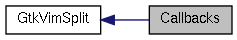

|
Cream-Browser unstable
|
|
Cream-Browser unstable
|
|  |
Functions | |
| static void | gtk_vim_split_grab_focus_cb (GtkWidget *w, GtkVimSplit *self) |
| static void gtk_vim_split_grab_focus_cb | ( | GtkWidget * | w, |
| GtkVimSplit * | self | ||
| ) | [static] |
| w | The widget which emitted the signal. |
| self | A GtkVimSplit object. |
This function handle the signal "grab-focus" emitted by a Notebook when one of its webview try to grab the focus.
 1.7.4
1.7.4